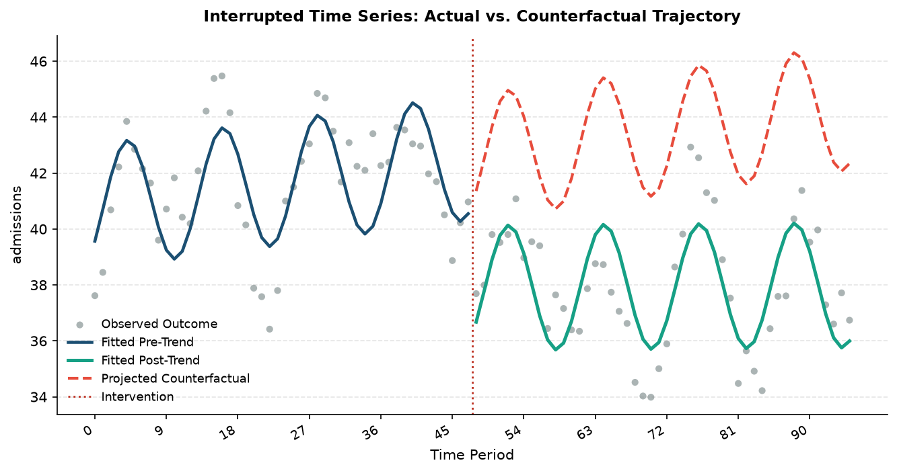

Interrupted Time Series & Controlled ITS
Segmented regression with Fourier seasonality, EWC fixed-b HAR, Andrews–Monahan prewhitened HAC, REML AR(1), in-time placebos, and Linden (2015) Controlled ITS.
EWC HAR Level Shift
-4.68
SE = 1.50 (true = -4.50)
Prewhitened HAC SE
1.19
vs NW-HAC SE = 0.86
REML AR(1) Level
-4.40
rho_hat = 0.00
Controlled ITS Diff
-3.18
Pre-trend p = 0.004
Serial Correlation Coverage Warning
Standard Bartlett Newey–West HAC (
error_model='hac') substantially under-covers under strong serial correlation (e.g., ρ = 0.80). Prefer error_model='ewc' (Lazarus–Lewis–Stock–Watson fixed-b HAR with t critical values), 'hac_pw' (Andrews–Monahan prewhitened HAC), or 'ar1_reml' (Harville REML AR(1)).1. Single-Series Segmented ITS & Serial-Correlation Models
ITS Error Models & In-Time Placebo
import quasi
# Compare serial-correlation inference options with Fourier seasonality
for mode in ("hac", "hac_pw", "ewc", "ar1_reml"):
res = quasi.estimate(
df_its,
design=quasi.ITSDesign(
outcome="admissions", time="month", intervention_date=48,
error_model=mode, seasonal_period=12, seasonal_harmonics=1,
),
)
print(f"{mode:10s} | level={res.estimate:+.3f} (SE={res.se:.3f}) | 95% CI=[{res.ci_lower:+.3f}, {res.ci_upper:+.3f}]")
# Covariance-aware post-intervention trajectory & pre-period in-time placebo falsification
ewc_res = quasi.InterruptedTimeSeries(
df_its, "admissions", "month", 48, error_model="ewc", seasonal_period=12,
).fit()
print(ewc_res.effect_trajectory().head())
print("In-time placebo:", ewc_res.in_time_placebo())hac | level=-4.685 (SE=0.865) | 95% CI=[-6.379, -2.990]
hac_pw | level=-4.685 (SE=1.188) | 95% CI=[-7.012, -2.357]
ewc | level=-4.685 (SE=1.496) | 95% CI=[-8.135, -1.234]
ar1_reml | level=-4.402 (SE=1.055) | 95% CI=[-6.499, -2.306]
In-time placebo falsification (pre-period splits):
placebo_date level_change level_se level_p slope_change slope_se slope_p
16 -2.026891 2.447967 0.431682 -0.201661 0.230821 0.407758
24 3.078747 2.647609 0.278405 -0.029053 0.241994 0.907397
32 1.290237 2.365039 0.600255 -0.231881 0.119158 0.087533| Error Model | Level Change | SE | 95% Lower | 95% Upper | Slope Change |
|---|---|---|---|---|---|
| hac | -4.6845 | 0.8645 | -6.3790 | -2.9901 | -0.0354 |
| hac_pw | -4.6845 | 1.1877 | -7.0125 | -2.3566 | -0.0354 |
| ewc | -4.6845 | 1.4962 | -8.1348 | -1.2343 | -0.0354 |
| ar1_reml | -4.4023 | 1.0553 | -6.4989 | -2.3058 | -0.0473 |

Figure 3. Observed monthly series, seasonal fitted regression, and extrapolated counterfactual under
error_model='ewc' (ewc_res.plot()).2. Two-Group Controlled ITS (Linden 2015)
When an untreated comparison series shares seasonal shocks or macro trends, ControlledITS estimates the difference-in-level-change (β6), difference-in-slope-change (β7), and tests pre-intervention slope parallelism (β3) directly.
Controlled ITS (CITS)
# Two-group Controlled Interrupted Time Series (Linden 2015) with EWC fixed-b HAR
cits = quasi.ControlledITS(
df_cits, outcome="admissions", time="month", group="treated",
intervention_date=48, error_model="ewc",
).fit()
print(cits.summary())[EXPERIMENTAL] Controlled Interrupted Time Series (Linden 2015)
======================================================================
Outcome: admissions | Intervention: 48
Diff-in-Level-Change: -3.1766 (SE: 1.5774, p=0.0788)
95% CI: [-6.8141, 0.4609]
Diff-in-Slope-Change: -0.0170 (SE: 0.0529, p=0.7566)
Pre-Trend Difference: -0.0687 (p=0.0037)
======================================================================| time | post_period | effect | se | ci_lower | ci_upper | cumulative_effect | cumulative_se | cumulative_ci_lower | cumulative_ci_upper |
|---|---|---|---|---|---|---|---|---|---|
| 48 | 0 | -4.6845 | 1.4962 | -8.1348 | -1.2343 | -4.6845 | 1.4962 | -8.1348 | -1.2343 |
| 49 | 1 | -4.7199 | 1.4907 | -8.1576 | -1.2823 | -9.4045 | 2.9865 | -16.2914 | -2.5175 |
| 50 | 2 | -4.7553 | 1.4870 | -8.1843 | -1.3263 | -14.1598 | 4.4722 | -24.4727 | -3.8468 |
| 51 | 3 | -4.7907 | 1.4850 | -8.2151 | -1.3663 | -18.9504 | 5.9546 | -32.6818 | -5.2190 |
| 52 | 4 | -4.8260 | 1.4847 | -8.2498 | -1.4023 | -23.7764 | 7.4350 | -40.9216 | -6.6313 |
| 53 | 5 | -4.8614 | 1.4862 | -8.2886 | -1.4342 | -28.6379 | 8.9147 | -49.1951 | -8.0806 |
| 54 | 6 | -4.8968 | 1.4894 | -8.3313 | -1.4622 | -33.5346 | 10.3949 | -57.5054 | -9.5638 |
| 55 | 7 | -4.9321 | 1.4943 | -8.3780 | -1.4862 | -38.4668 | 11.8771 | -65.8554 | -11.0781 |
[EXPERIMENTAL] Controlled Interrupted Time Series (Linden 2015)
======================================================================
Outcome: admissions | Intervention: 48
Diff-in-Level-Change: -3.1766 (SE: 1.5774, p=0.0788)
95% CI: [-6.8141, 0.4609]
Diff-in-Slope-Change: -0.0170 (SE: 0.0529, p=0.7566)
Pre-Trend Difference: -0.0687 (p=0.0037)
======================================================================